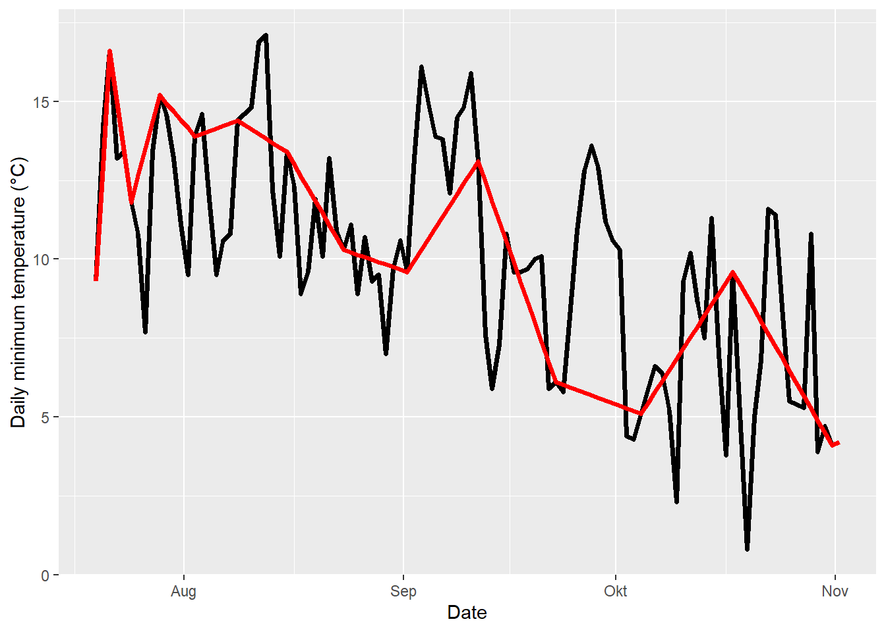

Chapter 10 Filling gaps in temperature records
10.1 Learning goals
- see why having gaps in records can be quite problematic
- learn about simple ways to fill gaps in daily temperature records
- learn how to use data from auxiliary weather stations to fill gaps in daily temperature records
- learn about a creative way to close gaps in hourly temperature records
10.2 Gaps
There is a wealth of weather data, but it often contains gaps due to issues like equipment malfunctions, power outages, and storage problems. These gaps pose challenges for modeling agroclimatic conditions, as many scientific methods struggle with missing data. Therefore, effective gap-filling methods are necessary.
10.3 Filling short gaps in daily records
Weather records are mostly complete, though some daily maximum or minimum temperatures may be missing. For short gaps, simple linear interpolation can estimate values by averaging the last known and first known measurements around the gap. This approach can work for gaps of 2-3 days, though accuracy declines with longer gaps. For extended absences of several weeks or more, linear interpolation may miss significant temperature trends, and for gaps as long as a year, it could entirely overlook seasonal patterns, leading to large errors. Nonetheless, the chillR package provides a function, interpolate_gaps(), to perform this basic interpolation:
weather <- KA_weather %>% make_all_day_table()
Tmin_int <- interpolate_gaps(weather[,"Tmin"])
weather <- weather %>% mutate(Tmin = Tmin_int$interp,
Tmin_interpolated = Tmin_int$missing)
Tmax_int <- interpolate_gaps(weather[,"Tmax"])
weather <- weather %>% mutate(Tmax = Tmax_int$interp,
Tmax_interpolated = Tmax_int$missing)The fix_weather() function in chillR uses linear interpolation to fill gaps in minimum and maximum temperature data by default. If any entire days are missing, it adds rows for these dates using make_all_day_table(). Users can also customize the function by setting the range of years (with start_year and end_year), specifying specific dates (using start_date and end_date in Julian days), and choosing column names if they differ from Tmin and Tmax.
# add an extra day to the KA_weather dataset that is not connected to the days that are already there.
# this creates a large gap, which we can then interpolate
KA_weather_gap <- rbind(KA_weather, c(Year = 2011,
Month = 3,
Day = 3,
Tmax = 26,
Tmin = 14))
# fill in the gaps between Julian date 300 (late October) and 100 (early April), only returning data between 2000 and 2011
fixed_winter_days <- KA_weather_gap %>% fix_weather(start_year = 2000,
end_year = 2011,
start_date = 300,
end_date = 100)
# fill in all gaps
fixed_all_days <- KA_weather_gap %>% fix_weather()The fix_weather() function returns a list with two components:
weather: Adata.framecontaining the interpolated weather data. It includes two additional columns,no_Tminandno_Tmax, which mark rows where minimum or maximum temperatures were originally missing (indicated asTRUE, otherwiseFALSE).QC:A quality control object that summarizes the number of interpolated values for each season.
These QC elements provide an overview of the data quality and interpolation extent for each dataset processed:
| Season | End_year | Season_days | Data_days | Missing_Tmin | Missing_Tmax | Incomplete_days | Perc_complete |
|---|---|---|---|---|---|---|---|
| 1999/2000 | 2000 | 166 | 100 | 66 | 66 | 66 | 60.2 |
| 2000/2001 | 2001 | 167 | 167 | 0 | 0 | 0 | 100.0 |
| 2001/2002 | 2002 | 166 | 166 | 0 | 0 | 0 | 100.0 |
| 2002/2003 | 2003 | 166 | 166 | 0 | 0 | 0 | 100.0 |
| 2003/2004 | 2004 | 166 | 166 | 0 | 0 | 0 | 100.0 |
| 2004/2005 | 2005 | 167 | 167 | 0 | 0 | 0 | 100.0 |
| 2005/2006 | 2006 | 166 | 166 | 0 | 0 | 0 | 100.0 |
| 2006/2007 | 2007 | 166 | 166 | 0 | 0 | 0 | 100.0 |
| 2007/2008 | 2008 | 166 | 166 | 0 | 0 | 0 | 100.0 |
| 2008/2009 | 2009 | 167 | 167 | 0 | 0 | 0 | 100.0 |
| 2009/2010 | 2010 | 166 | 166 | 0 | 0 | 0 | 100.0 |
| 2010/2011 | 2011 | 166 | 128 | 165 | 165 | 165 | 0.6 |
| Season | End_year | Season_days | Data_days | Missing_Tmin | Missing_Tmax | Incomplete_days | Perc_complete |
|---|---|---|---|---|---|---|---|
| 1997/1998 | 1998 | 365 | 365 | 0 | 0 | 0 | 100.0 |
| 1998/1999 | 1999 | 365 | 365 | 0 | 0 | 0 | 100.0 |
| 1999/2000 | 2000 | 366 | 366 | 0 | 0 | 0 | 100.0 |
| 2000/2001 | 2001 | 365 | 365 | 0 | 0 | 0 | 100.0 |
| 2001/2002 | 2002 | 365 | 365 | 0 | 0 | 0 | 100.0 |
| 2002/2003 | 2003 | 365 | 365 | 0 | 0 | 0 | 100.0 |
| 2003/2004 | 2004 | 366 | 366 | 0 | 0 | 0 | 100.0 |
| 2004/2005 | 2005 | 365 | 365 | 0 | 0 | 0 | 100.0 |
| 2005/2006 | 2006 | 365 | 365 | 0 | 0 | 0 | 100.0 |
| 2006/2007 | 2007 | 365 | 365 | 0 | 0 | 0 | 100.0 |
| 2007/2008 | 2008 | 366 | 366 | 0 | 0 | 0 | 100.0 |
| 2008/2009 | 2009 | 365 | 365 | 0 | 0 | 0 | 100.0 |
| 2009/2010 | 2010 | 365 | 365 | 214 | 214 | 214 | 41.4 |
| 2010/2011 | 2011 | 365 | 62 | 364 | 364 | 364 | 0.3 |
As mentioned, linear interpolation works reasonably well for short gaps in data but becomes less reliable as the gaps lengthen. Below is a simple demonstration of this effect:
gap_weather <- KA_weather[200:305, ]
gap_weather[ ,"Tmin_observed"] <- gap_weather$Tmin
gap_weather$Tmin[c(2, 4:5, 7:9, 11:14, 16:20, 22:27, 29:35,
37:44, 46:54, 56:65, 67:77, 79:90, 92:104)] <- NA
fixed_gaps <- fix_weather(gap_weather)$weather
ggplot(data = fixed_gaps,
aes(DATE, Tmin_observed)) +
geom_line(lwd = 1.3) +
xlab("Date") +
ylab("Daily minimum temperature (°C)") +
geom_line(data = fixed_gaps, aes(DATE, Tmin), col = "red", lwd = 1.3)
The plot illustrates original temperature measurements (in black) alongside interpolated values (in red). To simulate gaps, values were removed incrementally from the dataset - starting with single missing values on the left and increasing up to 13 consecutive missing values on the right. The results show that for shorter gaps (left side), interpolation closely follows the temperature trends. However, as gaps grow longer (right side), the interpolated values deviate more significantly, failing to capture the actual temperature dynamics accurately. This visual demonstrates the diminishing reliability of linear interpolation as gaps increase in size.
fixed_gaps[,"error"] <- abs(fixed_gaps$Tmin - fixed_gaps$Tmin_observed)
ggplot(data = fixed_gaps,
aes(DATE, error)) +
geom_line(lwd = 1.3) +
xlab("Date") +
ylab("Error introduced by interpolation (°C)") +
geom_point(data = fixed_gaps[which(!fixed_gaps$no_Tmin),],
aes(DATE, error),col = "red", cex = 3)
The size of interpolation errors depends on temperature variation during the missing periods - high variation leads to larger errors. As gap sizes increase, errors tend to grow, especially in the middle of large gaps, where interpolated values can be far from actual conditions. While errors are zero at points where data exists, larger gaps clearly require a more advanced method for accurate estimation.
10.4 Filling long gaps in daily records
Long gaps in temperature records are a persistent issue because actual temperatures at specific times and locations are unknown if no measurements were taken. While linear interpolation can provide reasonable estimates for short gaps, longer gaps require more reliable approaches. Instead of using complex interpolation algorithms, an effective solution can be to incorporate additional data from nearby weather stations in climatically similar settings.
Typically, if another station close to the target site has a similar climate, its data can be used to fill in gaps. For example, this method is used in the CIMIS network in California, where data from nearby stations is often used to address missing values. However, this approach has limitations, as even small differences in elevation or unique landscape features (like lakes, forests, or coastlines) can lead to climate variations that make nearby stations less accurate proxies.
In chillR, the patch_weather() function addresses these limitations by using data from auxiliary stations to fill gaps. It can detect certain biases, adjust for mean temperature biases, and apply the corrected data to the location of interest, thus providing a more refined way to handle missing temperature records.
To fill gaps in the temperature dataset for Bonn, downloaded in the Getting temperature data lesson, the following steps should be taken:
| Season | End_year | Season_days | Data_days | Missing_Tmin | Missing_Tmax | Incomplete_days | Perc_complete |
|---|---|---|---|---|---|---|---|
| 1989/1990 | 1990 | 365 | 365 | 0 | 0 | 0 | 100.0 |
| 1990/1991 | 1991 | 365 | 365 | 0 | 0 | 0 | 100.0 |
| 1991/1992 | 1992 | 366 | 366 | 0 | 0 | 0 | 100.0 |
| 1992/1993 | 1993 | 365 | 365 | 0 | 0 | 0 | 100.0 |
| 1993/1994 | 1994 | 365 | 365 | 0 | 0 | 0 | 100.0 |
| 1994/1995 | 1995 | 365 | 365 | 0 | 0 | 0 | 100.0 |
| 1995/1996 | 1996 | 366 | 366 | 0 | 0 | 0 | 100.0 |
| 1996/1997 | 1997 | 365 | 365 | 0 | 0 | 0 | 100.0 |
| 1997/1998 | 1998 | 365 | 365 | 4 | 4 | 4 | 98.9 |
| 1998/1999 | 1999 | 365 | 365 | 365 | 365 | 365 | 0.0 |
| 1999/2000 | 2000 | 366 | 366 | 366 | 366 | 366 | 0.0 |
| 2000/2001 | 2001 | 365 | 365 | 365 | 365 | 365 | 0.0 |
| 2001/2002 | 2002 | 365 | 365 | 365 | 365 | 365 | 0.0 |
| 2002/2003 | 2003 | 365 | 365 | 316 | 316 | 316 | 13.4 |
| 2003/2004 | 2004 | 366 | 366 | 366 | 366 | 366 | 0.0 |
| 2004/2005 | 2005 | 365 | 365 | 0 | 0 | 0 | 100.0 |
| 2005/2006 | 2006 | 365 | 365 | 0 | 0 | 0 | 100.0 |
| 2006/2007 | 2007 | 365 | 365 | 0 | 0 | 0 | 100.0 |
| 2007/2008 | 2008 | 366 | 366 | 0 | 0 | 0 | 100.0 |
| 2008/2009 | 2009 | 365 | 365 | 0 | 0 | 0 | 100.0 |
| 2009/2010 | 2010 | 365 | 365 | 0 | 0 | 0 | 100.0 |
| 2010/2011 | 2011 | 365 | 365 | 0 | 0 | 0 | 100.0 |
| 2011/2012 | 2012 | 366 | 366 | 0 | 0 | 0 | 100.0 |
| 2012/2013 | 2013 | 365 | 365 | 0 | 0 | 0 | 100.0 |
| 2013/2014 | 2014 | 365 | 365 | 0 | 0 | 0 | 100.0 |
| 2014/2015 | 2015 | 365 | 365 | 0 | 0 | 0 | 100.0 |
| 2015/2016 | 2016 | 366 | 366 | 0 | 0 | 0 | 100.0 |
| 2016/2017 | 2017 | 365 | 365 | 0 | 0 | 0 | 100.0 |
| 2017/2018 | 2018 | 365 | 365 | 0 | 0 | 0 | 100.0 |
| 2018/2019 | 2019 | 365 | 365 | 0 | 0 | 0 | 100.0 |
| 2019/2020 | 2020 | 366 | 366 | 0 | 0 | 0 | 100.0 |
The dataset for Bonn has significant gaps between 1998 and 2004, as well as in 2008 (where almost all values are missing), along with shorter gaps in 2015, 2018, and 2020.
To address these gaps, data from nearby weather stations is required. The handle_gsod() function can be used to find relevant stations in the surrounding area.
station_list <- handle_gsod(action = "list_stations",
location = c(7.10, 50.73),
time_interval = c(1990, 2020))## chillR_code STATION.NAME CTRY Lat Long BEGIN END Distance Overlap_years
## 1 10517099999 BONN/FRIESDORF(AUT) GM 50.700 7.150 19360102 19921231 4.86 3.00
## 2 10518099999 BONN-HARDTHOEHE GM 50.700 7.033 19750523 19971223 5.79 7.98
## 3 10519099999 BONN-ROLEBER GM 50.733 7.200 20010705 20081231 7.07 7.49
## 4 10513099999 KOLN BONN GM 50.866 7.143 19310101 20230729 15.43 31.00
## 5 10509099999 BUTZWEILERHOF(BAFB) GM 50.983 6.900 19780901 19950823 31.47 5.64
## 6 10502099999 NORVENICH GM 50.831 6.658 19730101 20230729 33.14 31.00
## 7 10514099999 MENDIG GM 50.366 7.315 19730102 19971231 43.26 8.00
## 8 10506099999 NUERBURG-BARWEILER GM 50.367 6.867 19950401 19971231 43.63 2.75
## 9 10508099999 BLANKENHEIM GM 50.450 6.650 19781002 19840504 44.56 0.00
## 10 10510099999 NUERBURG GM 50.333 6.950 19300901 19921231 45.42 3.00
## 11 10515099999 BENDORF GM 50.417 7.583 19310102 20030816 48.82 13.62
## 12 10504099999 EIFEL GM 50.650 6.283 20040501 20040501 58.41 0.00
## 13 10526099999 BAD MARIENBERG GM 50.667 7.967 19730101 20030816 61.65 13.62
## 14 10613099999 BUCHEL GM 50.174 7.063 19730101 20230729 61.90 31.00
## 15 10503099999 AACHEN/MERZBRUCK GM 50.817 6.183 19780901 19971212 65.40 7.95
## 16 10419099999 LUDENSCHEID & GM 51.233 7.600 19270906 20030306 66.06 13.18
## 17 10400099999 DUSSELDORF GM 51.289 6.767 19310102 20230729 66.43 31.00
## 18 10616299999 SIEGERLAND GM 50.708 8.083 20040510 20230729 69.46 16.65
## 19 10418099999 LUEDENSCHEID GM 51.250 7.650 19940301 19971231 69.55 3.84
## 20 10437499999 MONCHENGLADBACH GM 51.230 6.504 19960715 20230729 69.61 24.47
## 21 10403099999 MOENCHENGLADBACH GM 51.233 6.500 19381001 19421031 70.05 0.00
## 22 10501099999 AACHEN GM 50.783 6.100 19280101 20030816 70.81 13.62
## 23 6496099999 ELSENBORN (MIL) BE 50.467 6.183 19840501 20230729 71.21 31.00
## 24 10409099999 ESSEN/MUELHEIM GM 51.400 6.967 19300414 19431231 75.12 0.00
## 25 10410099999 ESSEN/MULHEIM GM 51.400 6.967 19310101 20220408 75.12 31.00
## Perc_interval_covered
## 1 10
## 2 26
## 3 24
## 4 100
## 5 18
## 6 100
## 7 26
## 8 9
## 9 0
## 10 10
## 11 44
## 12 0
## 13 44
## 14 100
## 15 26
## 16 43
## 17 100
## 18 54
## 19 12
## 20 79
## 21 0
## 22 44
## 23 100
## 24 0
## 25 100| chillR_code | STATION.NAME | CTRY | Lat | Long | BEGIN | END | Distance | Overlap_years | Perc_interval_covered |
|---|---|---|---|---|---|---|---|---|---|
| 10517099999 | BONN/FRIESDORF(AUT) | GM | 50.700 | 7.150 | 19360102 | 19921231 | 4.86 | 3.00 | 10 |
| 10518099999 | BONN-HARDTHOEHE | GM | 50.700 | 7.033 | 19750523 | 19971223 | 5.79 | 7.98 | 26 |
| 10519099999 | BONN-ROLEBER | GM | 50.733 | 7.200 | 20010705 | 20081231 | 7.07 | 7.49 | 24 |
| 10513099999 | KOLN BONN | GM | 50.866 | 7.143 | 19310101 | 20230729 | 15.43 | 31.00 | 100 |
| 10509099999 | BUTZWEILERHOF(BAFB) | GM | 50.983 | 6.900 | 19780901 | 19950823 | 31.47 | 5.64 | 18 |
| 10502099999 | NORVENICH | GM | 50.831 | 6.658 | 19730101 | 20230729 | 33.14 | 31.00 | 100 |
| 10514099999 | MENDIG | GM | 50.366 | 7.315 | 19730102 | 19971231 | 43.26 | 8.00 | 26 |
| 10506099999 | NUERBURG-BARWEILER | GM | 50.367 | 6.867 | 19950401 | 19971231 | 43.63 | 2.75 | 9 |
| 10508099999 | BLANKENHEIM | GM | 50.450 | 6.650 | 19781002 | 19840504 | 44.56 | 0.00 | 0 |
| 10510099999 | NUERBURG | GM | 50.333 | 6.950 | 19300901 | 19921231 | 45.42 | 3.00 | 10 |
| 10515099999 | BENDORF | GM | 50.417 | 7.583 | 19310102 | 20030816 | 48.82 | 13.62 | 44 |
| 10504099999 | EIFEL | GM | 50.650 | 6.283 | 20040501 | 20040501 | 58.41 | 0.00 | 0 |
| 10526099999 | BAD MARIENBERG | GM | 50.667 | 7.967 | 19730101 | 20030816 | 61.65 | 13.62 | 44 |
| 10613099999 | BUCHEL | GM | 50.174 | 7.063 | 19730101 | 20230729 | 61.90 | 31.00 | 100 |
| 10503099999 | AACHEN/MERZBRUCK | GM | 50.817 | 6.183 | 19780901 | 19971212 | 65.40 | 7.95 | 26 |
| 10419099999 | LUDENSCHEID & | GM | 51.233 | 7.600 | 19270906 | 20030306 | 66.06 | 13.18 | 43 |
| 10400099999 | DUSSELDORF | GM | 51.289 | 6.767 | 19310102 | 20230729 | 66.43 | 31.00 | 100 |
| 10616299999 | SIEGERLAND | GM | 50.708 | 8.083 | 20040510 | 20230729 | 69.46 | 16.65 | 54 |
| 10418099999 | LUEDENSCHEID | GM | 51.250 | 7.650 | 19940301 | 19971231 | 69.55 | 3.84 | 12 |
| 10437499999 | MONCHENGLADBACH | GM | 51.230 | 6.504 | 19960715 | 20230729 | 69.61 | 24.47 | 79 |
| 10403099999 | MOENCHENGLADBACH | GM | 51.233 | 6.500 | 19381001 | 19421031 | 70.05 | 0.00 | 0 |
| 10501099999 | AACHEN | GM | 50.783 | 6.100 | 19280101 | 20030816 | 70.81 | 13.62 | 44 |
| 6496099999 | ELSENBORN (MIL) | BE | 50.467 | 6.183 | 19840501 | 20230729 | 71.21 | 31.00 | 100 |
| 10409099999 | ESSEN/MUELHEIM | GM | 51.400 | 6.967 | 19300414 | 19431231 | 75.12 | 0.00 | 0 |
| 10410099999 | ESSEN/MULHEIM | GM | 51.400 | 6.967 | 19310101 | 20220408 | 75.12 | 31.00 | 100 |
Many of the stations listed may not be useful, as they only overlap with the existing record for a few years, or not at all. As a result, it’s unlikely that any single station will be able to fill all the gaps in Bonn’s temperature data. However, by combining data from multiple auxiliary stations, it may be possible to fill in the missing values. Promising stations include BONN-HARDTHOEHE, BONN-ROLEBER, and NORVENICH. These stations will be downloaded and stored in a list.
In chillR version 0.74 and later, the handle_gsod() function can download multiple station records at once, returning them as a named list. This function will be used to download the records for the selected stations (positions 2, 3, and 6 in the station list).
patch_weather <-
handle_gsod(action = "download_weather",
location = as.character(station_list$chillR_code[c(2, 3, 6)]),
time_interval = c(1990, 2020)) %>%
handle_gsod()## Loading data for 31 years from station 'NORVENICH'
## ==============================================================================================
##
## Loading data for 31 years from station 'BONN-HARDTHOEHE'
## ==============================================================================================
##
## Loading data for 31 years from station 'BONN-ROLEBER'
## ==============================================================================================With the list of potentially useful weather records now available, the next step is to use the patch_daily_temperatures() function. This function will integrate the data from the selected auxiliary stations to fill the missing temperature values in the Bonn dataset:
The results can be reviewed by examining the statistics element of the patched object, accessed using patched$statistics. This will provide an overview of how the gaps were filled and the adjustments made using the auxiliary station data.
| mean_bias | stdev_bias | filled | gaps_remain | |
|---|---|---|---|---|
| Tmin | -0.307 | 1.304 | 2146 | 1 |
| Tmax | 0.202 | 1.154 | 2146 | 1 |
| mean_bias | stdev_bias | filled | gaps_remain | |
|---|---|---|---|---|
| Tmin | -1.871 | 2.080 | 0 | 1 |
| Tmax | 1.466 | 1.427 | 0 | 1 |
| mean_bias | stdev_bias | filled | gaps_remain | |
|---|---|---|---|---|
| Tmin | -0.546 | 1.186 | 0 | 1 |
| Tmax | 1.314 | 1.089 | 0 | 1 |
The analysis provides insight into the similarity between the temperature records from the auxiliary stations and the target station in Bonn, specifically for both Tmin and Tmax. It includes the following statistics:
filled: The number of days for which data was successfully transferred from each auxiliary station.gaps_remain: The number of gaps still present after the patching process.
Additionally, two quality statistics are provided:
Mean Bias (
mean_bias): The average temperature difference between the auxiliary station and the Bonn station. This can be easily addressed by adjusting daily temperature values when transferring data between stations, and thepatch_daily_temperatures()function automatically corrects for this.Standard Deviation of Daily Differences (
stdev_bias): This indicates the variability in the differences between the stations. A high stdev_bias suggests that the temperature differences are not systematic and may not be easily corrected. If the stdev_bias exceeds a certain threshold, it may be best to exclude that station from the data transfer.
To address these metrics, limits can be set for both. The mean_bias can be capped at 1°C, and the stdev_bias can be capped at 2°C. These thresholds will be passed as parameters (max_mean_bias and max_stdev_bias) to the patch_daily_temperatures() function. After setting these limits, the statistics should be reviewed again to ensure the quality of the patching process.
patched <- patch_daily_temperatures(weather = Bonn,
patch_weather = patch_weather,
max_mean_bias = 1,
max_stdev_bias = 2)| mean_bias | stdev_bias | filled | gaps_remain | |
|---|---|---|---|---|
| Tmin | -0.307 | 1.304 | 2146 | 1 |
| Tmax | 0.202 | 1.154 | 2146 | 1 |
| mean_bias | stdev_bias | filled | gaps_remain | |
|---|---|---|---|---|
| Tmin | -1.871 | 2.080 | 0 | 1 |
| Tmax | 1.466 | 1.427 | 0 | 1 |
| mean_bias | stdev_bias | filled | gaps_remain | |
|---|---|---|---|---|
| Tmin | -0.546 | 1.186 | 0 | 1 |
| Tmax | 1.314 | 1.089 | 0 | 1 |
After applying the filters, all records from BONN-HARDTHOEHE and the Tmax records from BONN-ROLEBER were rejected because they did not meet the mean_bias threshold. However, the data from NORVENICH were deemed suitable, allowing us to fill 2,146 gaps for both Tmin and Tmax, leaving just 1 gap remaining for each.
To identify where the remaining gaps are, the next step is to use the fix_weather() function. This will allow us to examine the dataset and pinpoint the exact locations of the remaining gaps in both Tmin and Tmax.
| Season | End_year | Season_days | Data_days | Missing_Tmin | Missing_Tmax | Incomplete_days | Perc_complete |
|---|---|---|---|---|---|---|---|
| 1989/1990 | 1990 | 365 | 365 | 0 | 0 | 0 | 100.0 |
| 1990/1991 | 1991 | 365 | 365 | 0 | 0 | 0 | 100.0 |
| 1991/1992 | 1992 | 366 | 366 | 0 | 0 | 0 | 100.0 |
| 1992/1993 | 1993 | 365 | 365 | 0 | 0 | 0 | 100.0 |
| 1993/1994 | 1994 | 365 | 365 | 0 | 0 | 0 | 100.0 |
| 1994/1995 | 1995 | 365 | 365 | 0 | 0 | 0 | 100.0 |
| 1995/1996 | 1996 | 366 | 366 | 0 | 0 | 0 | 100.0 |
| 1996/1997 | 1997 | 365 | 365 | 0 | 0 | 0 | 100.0 |
| 1997/1998 | 1998 | 365 | 365 | 0 | 0 | 0 | 100.0 |
| 1998/1999 | 1999 | 365 | 365 | 1 | 1 | 1 | 99.7 |
| 1999/2000 | 2000 | 366 | 366 | 0 | 0 | 0 | 100.0 |
| 2000/2001 | 2001 | 365 | 365 | 0 | 0 | 0 | 100.0 |
| 2001/2002 | 2002 | 365 | 365 | 0 | 0 | 0 | 100.0 |
| 2002/2003 | 2003 | 365 | 365 | 0 | 0 | 0 | 100.0 |
| 2003/2004 | 2004 | 366 | 366 | 0 | 0 | 0 | 100.0 |
| 2004/2005 | 2005 | 365 | 365 | 0 | 0 | 0 | 100.0 |
| 2005/2006 | 2006 | 365 | 365 | 0 | 0 | 0 | 100.0 |
| 2006/2007 | 2007 | 365 | 365 | 0 | 0 | 0 | 100.0 |
| 2007/2008 | 2008 | 366 | 366 | 0 | 0 | 0 | 100.0 |
| 2008/2009 | 2009 | 365 | 365 | 0 | 0 | 0 | 100.0 |
| 2009/2010 | 2010 | 365 | 365 | 0 | 0 | 0 | 100.0 |
| 2010/2011 | 2011 | 365 | 365 | 0 | 0 | 0 | 100.0 |
| 2011/2012 | 2012 | 366 | 366 | 0 | 0 | 0 | 100.0 |
| 2012/2013 | 2013 | 365 | 365 | 0 | 0 | 0 | 100.0 |
| 2013/2014 | 2014 | 365 | 365 | 0 | 0 | 0 | 100.0 |
| 2014/2015 | 2015 | 365 | 365 | 0 | 0 | 0 | 100.0 |
| 2015/2016 | 2016 | 366 | 366 | 0 | 0 | 0 | 100.0 |
| 2016/2017 | 2017 | 365 | 365 | 0 | 0 | 0 | 100.0 |
| 2017/2018 | 2018 | 365 | 365 | 0 | 0 | 0 | 100.0 |
| 2018/2019 | 2019 | 365 | 365 | 0 | 0 | 0 | 100.0 |
| 2019/2020 | 2020 | 366 | 366 | 0 | 0 | 0 | 100.0 |
After patching the dataset, only a single day’s data remains missing, which is a very short gap. Given its small size, it is reasonable to use linear interpolation to fill this remaining gap. The fix_weather() function can be used to interpolate this final missing value and complete the dataset.
10.4.1 Bias-correction for shorter intervals
In the patch_daily_temperatures() function, the bias correction is typically based on the average temperature difference between two weather stations over the entire year. However, this approach assumes that the bias between stations is constant throughout the year, which may not be true. In reality, the bias can vary across different seasons, meaning a station might be a good proxy for temperature data during certain times of the year but not others.
To address this, the patch_daily_temps() function (note the slight name difference) allows for seasonally adjusted bias correction. By default, this function evaluates temperature data on a monthly basis, making separate comparisons for each calendar month. It can then assess whether an auxiliary station is a reliable proxy for temperatures in each specific month and apply month-specific bias corrections, leading to more accurate estimations with smaller biases than if the entire year were used for comparison.
patched_monthly <- patch_daily_temps(weather = Bonn,
patch_weather = patch_weather,
max_mean_bias = 1,
max_stdev_bias = 2,
time_interval = "month")The findings for minimum temperatures from the NORVENICH station can be summarized as follows:
| Interval | Total_days | Overlap_days | Mean_bias | Stdev_bias | Gaps_before | Filled | Gaps_remain |
|---|---|---|---|---|---|---|---|
| 1 | 961 | 773 | 0.184 | 1.260 | 186 | 185 | 1 |
| 2 | 961 | 774 | 0.281 | 1.242 | 186 | 186 | 0 |
| 3 | 876 | 706 | 0.269 | 1.248 | 170 | 170 | 0 |
| 4 | 961 | 775 | 0.253 | 1.427 | 186 | 186 | 0 |
| 5 | 930 | 758 | 0.509 | 1.431 | 166 | 166 | 0 |
| 6 | 961 | 801 | 0.373 | 1.238 | 158 | 158 | 0 |
| 7 | 930 | 749 | 0.396 | 1.210 | 180 | 180 | 0 |
| 8 | 961 | 781 | 0.480 | 1.305 | 179 | 179 | 0 |
| 9 | 961 | 774 | 0.529 | 1.302 | 186 | 186 | 0 |
| 10 | 930 | 750 | 0.205 | 1.264 | 180 | 180 | 0 |
| 11 | 961 | 775 | 0.098 | 1.307 | 186 | 186 | 0 |
| 12 | 930 | 745 | 0.101 | 1.308 | 184 | 184 | 0 |
The analysis shows that the mean bias between the stations varies significantly throughout the year, indicating that a month-specific bias correction would likely improve the accuracy of the temperature data.
To implement this, the time_interval parameter in the patch_daily_temps() function allows for flexibility in the interval used for bias correction. Intervals can be set to month, week, or even custom durations like 10 days or 2 weeks. The function will start counting these intervals from January 1st of each year, which might result in shorter intervals toward the end of the year. This can generate warnings if the final interval is smaller than the selected period.
However, it’s important to keep in mind that using smaller intervals reduces the amount of data available for bias determination. For short time series, very short intervals may not provide enough data, which could reduce the reliability of the bias correction. Therefore, selecting an appropriate interval size is crucial to balancing accuracy and data availability.
patched_2weeks <- patch_daily_temps(weather = Bonn,
patch_weather = patch_weather,
max_mean_bias = 1,
max_stdev_bias = 2,
time_interval = "2 weeks")To demonstrate the effects, 5000 gaps will be created in the Bonn weather record and filled with proxy data using annual, monthly, and bi-weekly intervals for bias evaluation. The resulting errors will be visualized with a violin plot using ggplot2.
Gaps <- sample(seq(1:nrow(Bonn)), size = 5000, replace = FALSE)
Bonn_gaps <- Bonn %>% mutate(obs_Tmin=Tmin,
obs_Tmax=Tmax)
Bonn_gaps$Tmin[Gaps] <- NA
Bonn_gaps$Tmax[Gaps] <- NA
patch_annual <- patch_daily_temps(weather = Bonn_gaps,
patch_weather = patch_weather,
max_mean_bias = 1,
max_stdev_bias = 2,
time_interval = "year")
patch_month <- patch_daily_temps(weather = Bonn_gaps,
patch_weather = patch_weather,
max_mean_bias = 1,
max_stdev_bias = 2,
time_interval = "month")
patch_2weeks <- patch_daily_temps(weather = Bonn_gaps,
patch_weather = patch_weather,
max_mean_bias = 1,
max_stdev_bias = 2,
time_interval = "2 weeks")
Bonn_gaps[,"Tmin_annual"] <- Bonn_gaps$obs_Tmin - patch_annual$weather$Tmin
Bonn_gaps[,"Tmax_annual"] <- Bonn_gaps$obs_Tmax - patch_annual$weather$Tmax
Bonn_gaps[,"Tmin_month"] <- Bonn_gaps$obs_Tmin - patch_month$weather$Tmin
Bonn_gaps[,"Tmax_month"] <- Bonn_gaps$obs_Tmax - patch_month$weather$Tmax
Bonn_gaps[,"Tmin_2weeks"] <- Bonn_gaps$obs_Tmin - patch_2weeks$weather$Tmin
Bonn_gaps[,"Tmax_2weeks"] <- Bonn_gaps$obs_Tmax - patch_2weeks$weather$Tmax
Interval_eval <- Bonn_gaps %>%
filter(is.na(Tmin)) %>%
pivot_longer(Tmin_annual:Tmax_2weeks) %>%
mutate(Type=factor(name,
levels = c("Tmin_annual",
"Tmin_month",
"Tmin_2weeks",
"Tmax_annual",
"Tmax_month",
"Tmax_2weeks")) )
ggplot(Interval_eval,
aes(Type,value)) +
geom_violin(draw_quantiles = c(0.25,0.5,0.75)) +
xlab("Variable and bias evaluation interval") +
ylab("Prediction error")It is also possible to evaluate the mean daily error:
error_eval <-
data.frame(Variable = c(rep("Tmin",3),rep("Tmax",3)),
Interval = rep(c("Year","Month","Two weeks"),2),
Error = c(
mean(abs(Bonn_gaps$Tmin_annual[is.na(Bonn_gaps$Tmin)]),na.rm=TRUE),
mean(abs(Bonn_gaps$Tmin_month[is.na(Bonn_gaps$Tmin)]),na.rm=TRUE),
mean(abs(Bonn_gaps$Tmin_2weeks[is.na(Bonn_gaps$Tmin)]),na.rm=TRUE),
mean(abs(Bonn_gaps$Tmax_annual[is.na(Bonn_gaps$Tmin)]),na.rm=TRUE),
mean(abs(Bonn_gaps$Tmax_month[is.na(Bonn_gaps$Tmin)]),na.rm=TRUE),
mean(abs(Bonn_gaps$Tmax_2weeks[is.na(Bonn_gaps$Tmin)]),na.rm=TRUE))
)| Variable | Interval | Error |
|---|---|---|
| Tmin | Year | 0.9937002 |
| Tmin | Month | 0.9852960 |
| Tmin | Two weeks | 0.9859109 |
| Tmax | Year | 0.8301270 |
| Tmax | Month | 0.8067909 |
| Tmax | Two weeks | 0.8094851 |
The improvement in the results was not very significant, likely because the stations used are relatively close to each other, and the weather conditions between them do not vary much.
10.4.2 Saving the data for later
The dataset based on monthly intervals should be saved for later use. Before saving, the remaining missing day needs to be interpolated. Once this gap is filled, the dataset can be stored for future use.
The long-term record for Bonn, covering the period from 1990 to 2020, is now complete with no remaining gaps. This dataset can now be saved for future use.
Only the weather element, a data.frame, was saved, as it can be easily exported as a spreadsheet (.csv file). While it is also possible to save lists, such as the QC element, this requires a more complex process, so it will be saved at a later time.
10.5 Exercises on filling gaps
- Use
chillRfunctions to find out how many gaps you have in your dataset (even if you have none, please still follow all further steps)
| Season | End_year | Season_days | Data_days | Missing_Tmin | Missing_Tmax | Incomplete_days | Perc_complete |
|---|---|---|---|---|---|---|---|
| 1989/1990 | 1990 | 365 | 365 | 0 | 0 | 0 | 100 |
| 1990/1991 | 1991 | 365 | 365 | 0 | 0 | 0 | 100 |
| 1991/1992 | 1992 | 366 | 366 | 0 | 0 | 0 | 100 |
| 1992/1993 | 1993 | 365 | 365 | 0 | 0 | 0 | 100 |
| 1993/1994 | 1994 | 365 | 365 | 0 | 0 | 0 | 100 |
| 1994/1995 | 1995 | 365 | 365 | 0 | 0 | 0 | 100 |
| 1995/1996 | 1996 | 366 | 366 | 0 | 0 | 0 | 100 |
| 1996/1997 | 1997 | 365 | 365 | 0 | 0 | 0 | 100 |
| 1997/1998 | 1998 | 365 | 365 | 0 | 0 | 0 | 100 |
| 1998/1999 | 1999 | 365 | 365 | 0 | 0 | 0 | 100 |
| 1999/2000 | 2000 | 366 | 366 | 0 | 0 | 0 | 100 |
| 2000/2001 | 2001 | 365 | 365 | 0 | 0 | 0 | 100 |
| 2001/2002 | 2002 | 365 | 365 | 0 | 0 | 0 | 100 |
| 2002/2003 | 2003 | 365 | 365 | 0 | 0 | 0 | 100 |
| 2003/2004 | 2004 | 366 | 366 | 0 | 0 | 0 | 100 |
| 2004/2005 | 2005 | 365 | 365 | 0 | 0 | 0 | 100 |
| 2005/2006 | 2006 | 365 | 365 | 0 | 0 | 0 | 100 |
| 2006/2007 | 2007 | 365 | 365 | 0 | 0 | 0 | 100 |
| 2007/2008 | 2008 | 366 | 366 | 0 | 0 | 0 | 100 |
| 2008/2009 | 2009 | 365 | 365 | 0 | 0 | 0 | 100 |
| 2009/2010 | 2010 | 365 | 365 | 0 | 0 | 0 | 100 |
| 2010/2011 | 2011 | 365 | 365 | 0 | 0 | 0 | 100 |
| 2011/2012 | 2012 | 366 | 366 | 0 | 0 | 0 | 100 |
| 2012/2013 | 2013 | 365 | 365 | 0 | 0 | 0 | 100 |
| 2013/2014 | 2014 | 365 | 365 | 0 | 0 | 0 | 100 |
| 2014/2015 | 2015 | 365 | 365 | 0 | 0 | 0 | 100 |
| 2015/2016 | 2016 | 366 | 366 | 0 | 0 | 0 | 100 |
| 2016/2017 | 2017 | 365 | 365 | 0 | 0 | 0 | 100 |
| 2017/2018 | 2018 | 365 | 365 | 0 | 0 | 0 | 100 |
| 2018/2019 | 2019 | 365 | 365 | 0 | 0 | 0 | 100 |
| 2019/2020 | 2020 | 366 | 366 | 0 | 0 | 0 | 100 |
- Create a list of the 25 closest weather stations using the
handle_gsodfunction
station_list_Yakima <- handle_gsod(action = "list_stations",
location = c(long = -120.50, lat = 46.60),
time_interval = c(1990, 2020))| chillR_code | STATION.NAME | CTRY | Lat | Long | BEGIN | END | Distance | Overlap_years | Perc_interval_covered |
|---|---|---|---|---|---|---|---|---|---|
| 72781024243 | YAKIMA AIR TERMINAL/MCALSR FIELD AP | US | 46.564 | -120.535 | 19730101 | 20250303 | 4.82 | 31.00 | 100 |
| 99999924243 | YAKIMA AIR TERMINAL | US | 46.568 | -120.543 | 19480101 | 19721231 | 4.85 | 0.00 | 0 |
| 72781399999 | VAGABOND AAF / YAKIMA TRAINING CENTER WASHINGTON USA | US | 46.667 | -120.454 | 20030617 | 20081110 | 8.25 | 5.40 | 17 |
| 72056299999 | RANGE OP 13 / YAKIMA TRAINING CENTER | US | 46.800 | -120.167 | 20080530 | 20170920 | 33.79 | 9.31 | 30 |
| 72788399999 | BOWERS FLD | US | 47.033 | -120.531 | 20000101 | 20031231 | 48.26 | 4.00 | 13 |
| 72788324220 | BOWERS FIELD AIRPORT | US | 47.034 | -120.531 | 19880106 | 20250303 | 48.37 | 31.00 | 100 |
| 99999924220 | ELLENSBURG BOWERS FI | US | 47.034 | -120.530 | 19480601 | 19550101 | 48.37 | 0.00 | 0 |
| 72784094187 | HANFORD AIRPORT | US | 46.567 | -119.600 | 20060101 | 20130326 | 68.96 | 7.23 | 23 |
| 72784099999 | HANFORD | US | 46.567 | -119.600 | 19730101 | 19971231 | 68.96 | 8.00 | 26 |
| 72782594239 | PANGBORN MEMORIAL AIRPORT | US | 47.397 | -120.201 | 20000101 | 20250303 | 91.58 | 21.00 | 68 |
| 72782599999 | PANGBORN MEM | US | 47.399 | -120.207 | 19730101 | 19971231 | 91.69 | 8.00 | 26 |
| 72788499999 | RICHLAND AIRPORT | US | 46.306 | -119.304 | 19810203 | 20250302 | 97.39 | 31.00 | 100 |
| 72781524237 | STAMPASS PASS FLTWO | US | 47.277 | -121.337 | 19730101 | 20250303 | 98.63 | 31.00 | 100 |
| 99999924237 | STAMPEDE PASS | US | 47.277 | -121.337 | 19480101 | 19721231 | 98.63 | 0.00 | 0 |
| 72790024141 | EPHRATA MUNICIPAL AIRPORT | US | 47.308 | -119.516 | 20050101 | 20250303 | 108.64 | 16.00 | 52 |
| 72782624141 | EPHRATA MUNICIPAL | US | 47.308 | -119.515 | 19420101 | 19971231 | 108.69 | 8.00 | 26 |
| 99999924141 | EPHRATA AP FCWOS | US | 47.308 | -119.515 | 19480101 | 19550101 | 108.69 | 0.00 | 0 |
| 72782724110 | GRANT COUNTY INTL AIRPORT | US | 47.193 | -119.315 | 19430610 | 20250303 | 111.73 | 31.00 | 100 |
| 72782799999 | MOSES LAKE/GRANT CO | US | 47.200 | -119.317 | 20000101 | 20031231 | 112.06 | 4.00 | 13 |
| 72784524163 | TRI-CITIES AIRPORT | US | 46.270 | -119.118 | 19730101 | 20250303 | 112.21 | 31.00 | 100 |
| 72784599999 | TRI CITIES | US | 46.267 | -119.117 | 20000101 | 20031231 | 112.40 | 4.00 | 13 |
| 99999924163 | PASCO NAS | US | 46.267 | -119.117 | 19450401 | 19460601 | 112.40 | 0.00 | 0 |
| 72698824219 | MUNICIPAL AIRPORT | US | 45.619 | -121.166 | 19730101 | 20250303 | 120.70 | 31.00 | 100 |
| 99999924219 | THE DALLES MUNICIPAL ARPT | US | 45.619 | -121.166 | 19480101 | 19650101 | 120.70 | 0.00 | 0 |
| 72688399999 | HERMISTON MUNI | US | 45.828 | -119.259 | 19980514 | 20051231 | 128.55 | 7.64 | 25 |
- Identify suitable weather stations for patching gaps
- Download weather data for promising stations, convert them to
chillRformat and compile them in a list
patch_weather <-
handle_gsod(action = "download_weather",
location = as.character(station_list_Yakima$chillR_code[c(4, 6, 8)]),
time_interval = c(1990, 2020)) %>%
handle_gsod()## Loading data for 31 years from station 'RANGE OP 13 / YAKIMA TRAINING CENTER'
## ==============================================================================================
##
## Loading data for 31 years from station 'HANFORD AIRPORT'
## ==============================================================================================
##
## Loading data for 31 years from station 'BOWERS FIELD AIRPORT'
## ==============================================================================================Use the
patch_daily_temperaturesfunction to fill gapsmean_bias
stdev_bias
filled
gaps_remain
Tmin
NA
NA
NA
NA
Tmax
NA
NA
NA
NA
mean_bias
stdev_bias
filled
gaps_remain
Tmin
NA
NA
NA
NA
Tmax
NA
NA
NA
NA
mean_bias
stdev_bias
filled
gaps_remain
Tmin
NA
NA
NA
NA
Tmax
NA
NA
NA
NA
Investigate the results - have all gaps been filled?